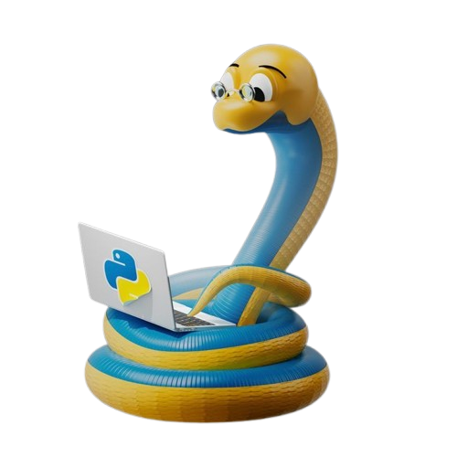

Les projets réalisés :

Les projets effectués tout au long de l'année sont des travaux à but éducatif avec un thème et un objectif en rapport avec la séquence.
Le projet est souvent programmé par groupe de deux ou trois élèves.
Avec ce programme, un compte-rendu est attendu. Il doit suivre des conditions évoquées dans un cahier des charges et faut savoir se partager les tâches de ce projet.
Une fois arrivé à la fin de ce projet, il faut l'envoyer aux professeurs par mail.
Le but de ces projet est d'appliquer les connaissances acquises lors de la séquence.
Le projet est souvent programmé par groupe de deux ou trois élèves.
Avec ce programme, un compte-rendu est attendu. Il doit suivre des conditions évoquées dans un cahier des charges et faut savoir se partager les tâches de ce projet.
Une fois arrivé à la fin de ce projet, il faut l'envoyer aux professeurs par mail.
Le but de ces projet est d'appliquer les connaissances acquises lors de la séquence.